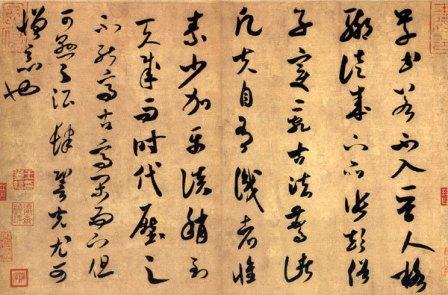

China has an extremely rich and diverse culture. Chinese traditional culture formed almost in isolation for thousands of years.
Contemporary Chinese culture is a mix of traditional culture, communist ideas and post-modernist influence of globalization processes.

The ancient written standard was Classical Chinese. It was used for thousands of years, but was mostly used by scholars and
intellectuals which forms the "top" class of the society called "shi da fu (士大夫）". It is difficult but possible for ordinary people to become
the "top" class by passing written exams. Calligraphy later became commercialized, and works by famous artists became prized possessions.
Chinese religion was originally oriented to worshipping the supreme god Shang Di during the Xia and Shang dynasties, with the king and diviners acting
as priests and using oracle bones. The Zhou dynasty oriented it to worshipping the broader concept of heaven. A large part of Chinese culture is based
on the notion that a spiritual world exists. Some of the most recognized holy figures include Guan Yin and Buddha.
The Zhou dynasty is often regarded as the touchstone of Chinese cultural development. Concepts covered within the Chinese classic texts present a wide
range of subjects including poetry, astrology, astronomy, calendar, constellations and many others. Some of the most important early texts include the I
Ching and the Shujing within the Four Books and Five Classics.
L A N G U A G E
R E L I G I O N
L I T E R A T U R E
N A V I G A T I O N